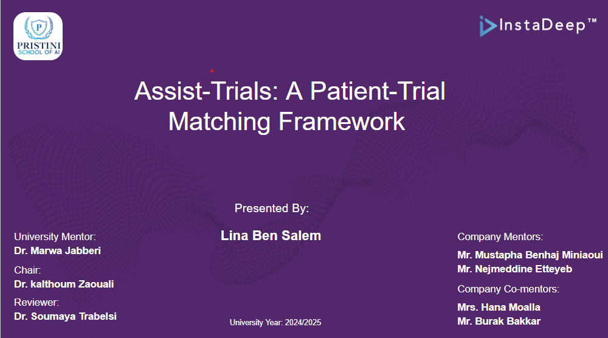
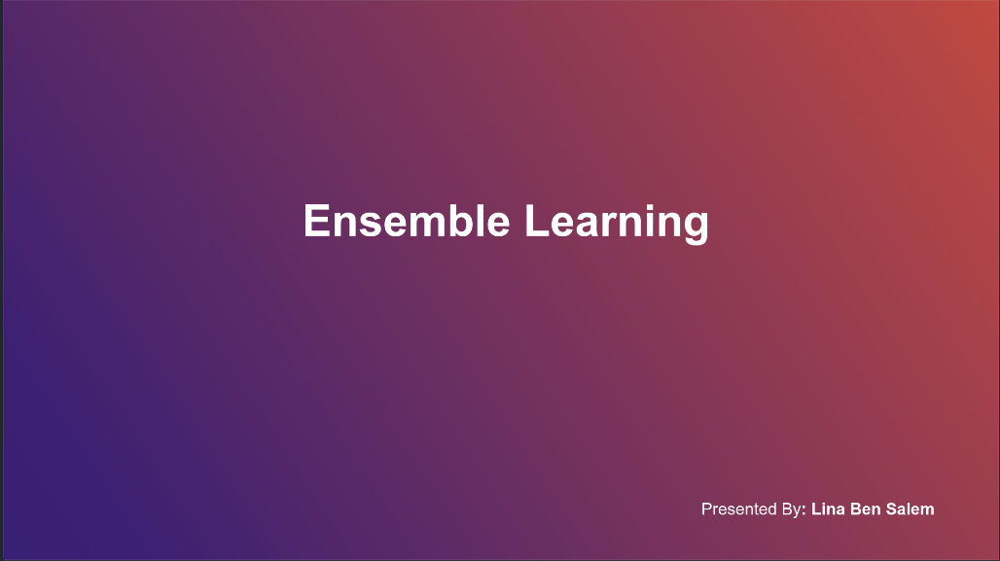
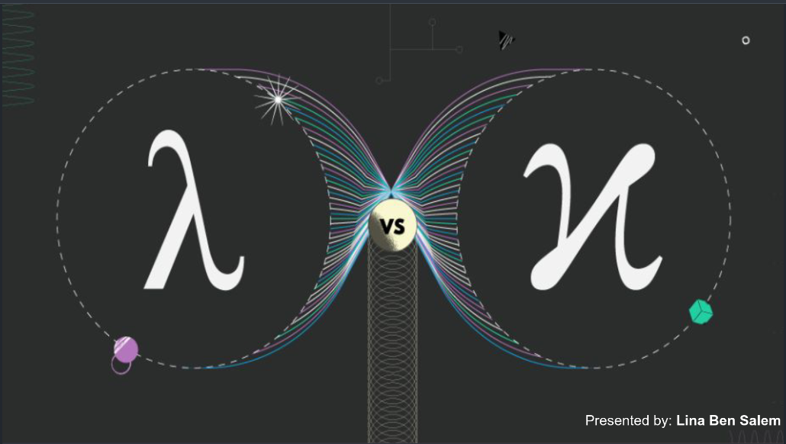
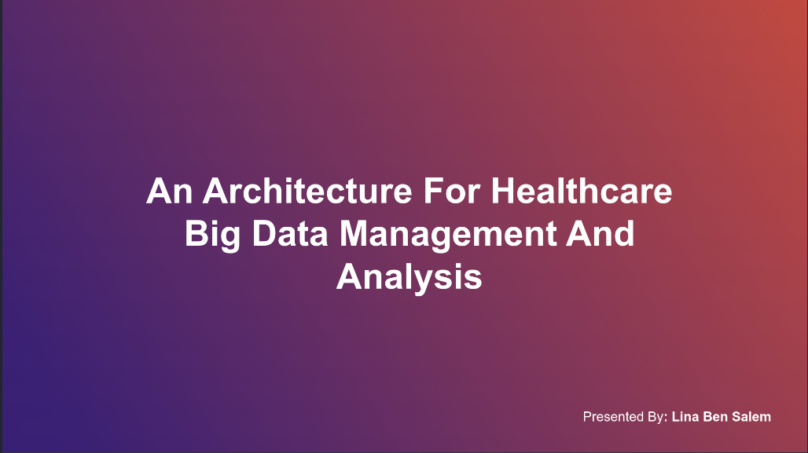
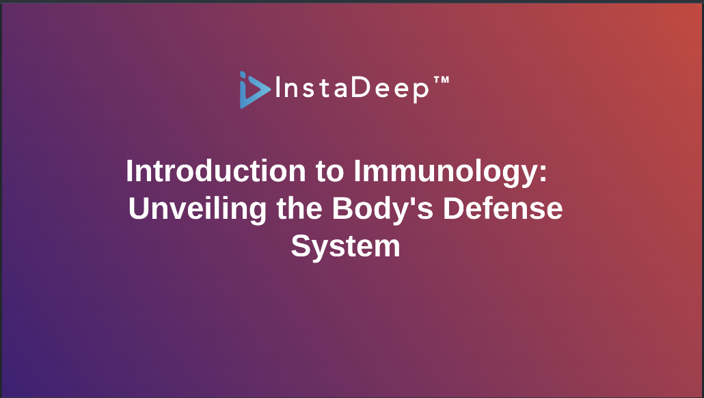
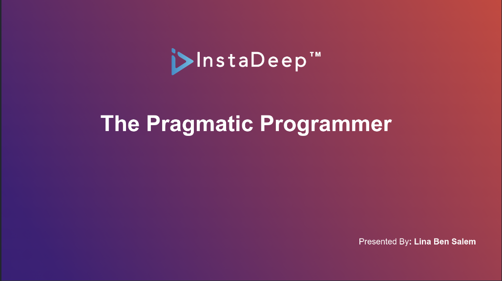

AI Researcher & Engineer · M.Sc. Data Science, AI & Healthtech
I am an AI Researcher and Engineer with a background on academic research from a M.Sc. thesis on automated Patient–Clinical Trial Matching via Graph-RAG in a Multi-Agentic System at InstaDeep (a BioNTech company), to currently leading AI integration across R&D and Business Development at Opalia Recordati (a pharmaceutical company).
This journey has given me a deep respect for what research combined with engineering makes possible.
Applied research and production engineering, from a benchmarked M.Sc. thesis to systems shipped inside a regulated business, plus a selection of applied and earlier engineering work organized into the three parts below.
Conducted at InstaDeep (a BioNTech company) with the AI Research and Bio AI teams.
This report presents a capstone research project conducted at InstaDeep as part of the National Master’s Degree in Data Science, AI & HealthTech at Pristini. The project addresses a key bottleneck in clinical research: the accurate and efficient identification of suitable clinical trials for patients, a process that often delays the development of new therapies.
We introduce an agentic, retrieval-augmented system powered by Large Language Models (LLMs) to automate the semantic alignment of unstructured patient records with structured trial documents. The system integrates LLM-based reasoning and regulatory-aware filtering to align with clinical constraints. Evaluated on a synthetic benchmark simulating realistic eligibility criteria, it achieves competitive performance relative to state-of-the-art approaches. This work offers a modular framework for accelerating patient recruitment while maintaining strict compliance with medical and regulatory standards.
Three systems designed and built at Opalia Recordati, from architecture to working systems.
A multi-agent LangGraph pipeline (literature search, composition analysis, particle size/morphology, polymorphic characterization, drug-excipient interaction checking) with a FastAPI/WebSocket backend streaming pipeline events to the frontend in real time. Claude with the Anthropic web search tool powers literature retrieval with confidence-scored sourcing. Pydantic v2 schemas enforce validated, structured output across every agent. Seven human-in-the-loop review gates are backed by a full timestamped audit trail. Reduced a multi-week manual research process to several minutes guided analysis.
StackBuilt a multi-agent LangGraph platform automating pharma business development workflows: market and IP landscape scanning, financial feasibility modeling, regulatory pathway assessment, and partner identification. Implemented output evaluation (accuracy, groundedness, cost/latency) and guardrails against hallucinated claims, with traceability back to the source LLM call, prompt, tool, and database step.
StackBuilt a Streamlit + FastAPI system automating Ph. Eur. monograph compliance review. An authenticated scraper (requests/BeautifulSoup, SSO session handling) retrieves monograph PDFs from the EDQM portal. A PyMuPDF-based parser extracts and cross-references required tests against a configurable, JSON-defined test catalogue. FastAPI endpoints expose batch PDF analysis and Excel cross-check functionality (openpyxl), consumed by the Streamlit frontend and available to other internal tools. Also integrates SOAP-based communication (zeep) with an internal ERP system.
StackApplied ML work and earlier software engineering projects. Research and production engineering systems are featured above.
Independent technical writing produced alongside AI research and system development.
A sample of academic and technical presentations delivered at InstaDeep, Pristini University, and in the context of M.Sc. thesis research.





